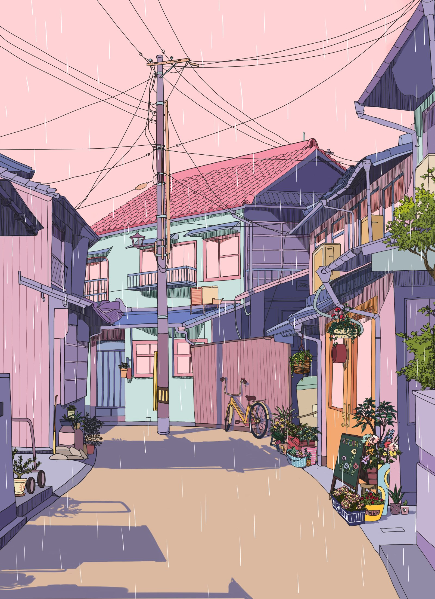

December 17, 2021, 9:00 AM CST
This drawing was made by @britneythoreson on Twitter - posted August 31, 2021. This drawing captures what I love about photography, actually! And drawings, of course. First, as a drawing, I think the colors here are amazing. They show an understanding of color theory and light sources, as well as depth. And maybe it's color blocking, maybe it line-less art, but something about the style makes it look photorealistic. And speaking of photos, this type of composition is what I like to capture in my photography: cluttered. The whole photo covered in buildings, windows, walls, and glass. I love seeing the wide range of architecture in one shot, and this drawing accomplishes that. And of course, there's a little witch helping a tiny cat in the focus of the image, which I find very cute. This, and the others accompanying it, is a great piece.

December 15, 2021, 9:00, AM CST
This drawing was made by @jgilleard on Twitter - posted February 14, 2021. This drawing is just so pretty and well done. I'm terrible at drawing backgrounds, so this kind of work inspires me to pick up a tablet and start practicing. I've also been really into animation and background art (not doing, just admiring) because of Ethan Becker's videos, so this is right up that alley. I think what I love is the color blocking on this. (I say "I think" because I'm not 100% sure what color blocking is. Ha! I just know that it's what makes art look realistic, no matter how stylized.) Anyway, the colors are so calming, and I love the geometric shapes of this world. I think that the light texure overlay also adds a really nice finishing touch.

December 13, 2021, 9:00 AM CST
These drawings were made by @mochiipanko on Twitter - posted July 14, 2020. This is another artist that I love. I decided to put two pieces here because they show two of the things I love in art: architecture and big green leaves. This artist is great at drawing people and clothes too, which I would have shown here if I had the time. Anyway, both images have great use of color - very calming, but with a high enough contrast to keep the viewer engaged. The first image's linework and architectural details, along with the simple wires, are what gets to me. I grew up drawing with Micron markers, so this style is what I aspire to. In the second image, it's the linework in the plants that I love - as well as in the wooden texture of the bed and floor. Everything just looks like what I wish I could create. Lovely!

December 11, 2021, 9:00 AM CST
This drawing was made by @neobees on Twitter - I couldn't find the original day it was posted. The artist, Natalie Shaw, is one of my favorites. I could talk about her work for hours, but I'll just say: follow her on Twitter or Instagram, or check out her website! Anyway, I love this picture because of how elegant it is, how clean, and well done it is. I love green plants like the ones she included, and the outfit the woman is wearing looks so boujee. The colors are also really nice, and the low contrast makes it easy to look at. Her art is always luxurious, and I'm always reminded of Vogue and brands like that. Her line-less style is one I'd love to learn from.

December 9, 2021, 9:00 AM CST
This drawing was made by @reumigi on Twitter - posted July 20, 2020. I love this picture, as well as the other ones posted alongside it. I think the artist did a great job at capturing what a real friend group is like: full of diverse personalities. With just their expressions and features, I can imagine the kinds of people the characters are. The poses, clothes, and sunny background also remind me of the last couple days of school in high school: it's warm out, everyone's happy and anticipating the vacation, but also trying to get in some last memories with their friends before they part ways for a couple of months. Of course, the weather is always warmer in Indonesia (where the artist is from), so my interpretation of it is just my own, and possibly innacurate. Either way, I like it!

December 7, 2021, 9:00 AM CST
This drawing was made by @vacuum_chan on Twitter - posted August 25, 2021. I personally think it's obvious why anyone would like this: it's pretty. The skill in colors, anatomy, composition, etc. When I saw this, I stared at it for a while, and I now consider it one of those art styles that I would wish for. The face is so pretty - the eyes! The gradients, the use of a strong black, bright purple, and bold red, all goes well together. And the details, of course.

December 5, 2021, 9:00 AM CST
This drawing was made by @manny_oe on Twitter - posted August 29, 2021. I like this one for a lot of reasons. First of all, the art is great. They know how to color, they understand anatomy, and their use of perspective and depth shows their skill. I also love how simple the composition is, and how much it tells. There's a story here, with the actions, emotions, and attire. The girl on the right is the sister that is getting an education, has her uniform, bag, and shoes ready. The one on the left is the one who doesn't - or can't - get an education. Instead, she has to stay home and clean, wash, do her duties, and help the family. She just wears what she has, pretty or not. They lead different lives while living under one roof.
December 3, 2021, 9:00 AM CST
This drawing was made by @spacegarbage on Twitter - posted April 24, 2021. I like this one because it is cute, simple, and really well done. The colors are bright and cute, and the face is very eye-catching and soft. The use of negative space is also interesting and inspiring. One thing I struggle with is using bolder colors, so it's a piece I could learn from.

December 1, 2021, 9:00 AM CST
This drawing was made by @yj_h1403 on Twitter, December 3, 2021. One of the reasons I like it is because it is simple and clean. It's very minimalistic, but still eye-catching. Something you notice upon closer investigation is that it is made up of one line - the artist never lifted their pen throughout it. This is probably done with sketches and pauses, but the end result is beautiful, and if you're like me, it becomes a sort of game, where you want to see where the line starts, goes, and ends. Right when I stumbled upon this on Twitter, I clicked to their profile and followed them.